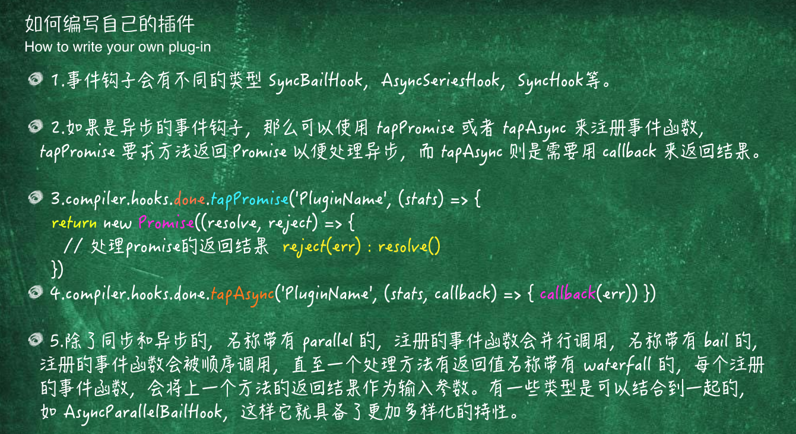
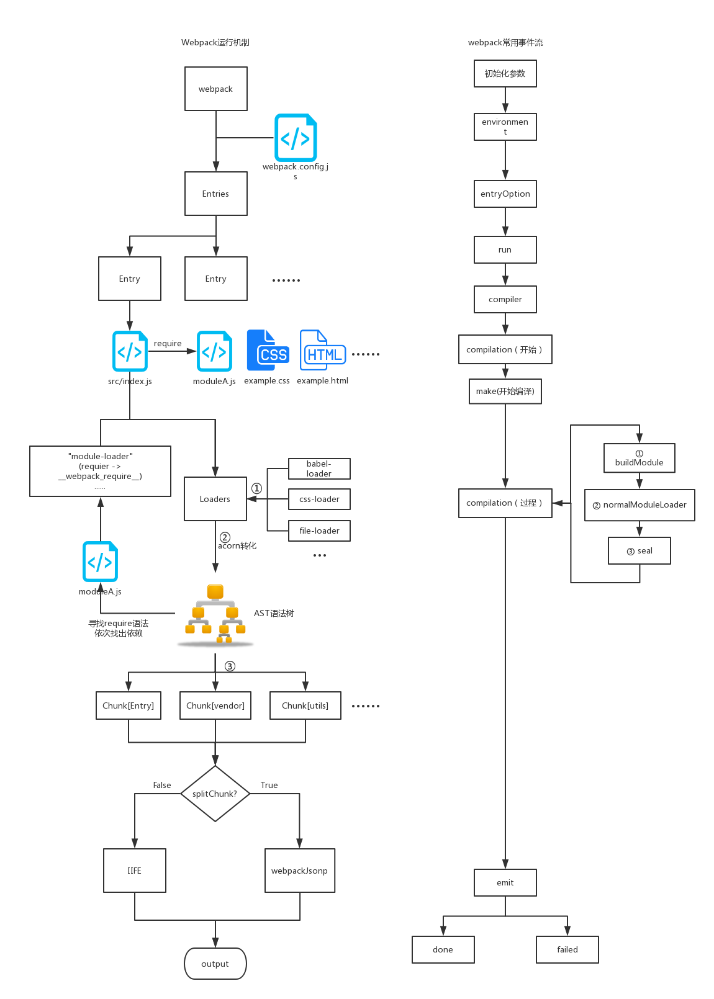

Webpack
webpack是一个现代 JavaScript 应用程序的静态模块打包器(module bundler)。当 webpack 处理应用程序时，它会递归地构建一个依赖关系图(dependency graph)，其中包含应用程序需要的每个模块，然后将所有这些模块打包成一个或多个 bundle。
Webpack 编译方式
- 使用 module map,维护项目中的依赖关系
- 使用了包裹函数，对每个模块进行包裹
- 使用了一个“runtime”方法（wepackBundle）最终合成 bundle 内容
语法
module.exports = {
//页面入口文件配置
entry: {
index : './src/app.js'
},
//入口文件输出配置
output: {
path: 'dist/',
filename: '[name:hash].js'
},
module: {
//loader配置
loaders: [
{ test: /\.js$/, loader: 'babel-loader' }
]
},
//插件项
plugins: [new webpackPlugin()],
//其它解决方案配置
devServer: {
contentBase: path.join(__dirname, "dist"),
compress: true,
port: 9000
},
resolve: {
extensions: ['', '.js', '.json', '.less'],
alias: {
@ : './src/',
}
}
模块
- entry:入口起点(entry point)指示 webpack 应该使用哪个模块，来作为构建其内部依赖图的开始。进入入口起点后，webpack 会找出有哪些模块和库是入口起点（直接和间接）依赖的。
- output: 属性告诉 webpack 在哪里输出它所创建的 bundles，以及如何命名这些文件，默认值为 ./dist。基本上，整个应用程序结构，都会被编译到你指定的输出路径的文件夹中。
- module： 这些选项决定了如何处理项目中的不同类型的模块
- loaders：loader 用于对模块的源代码进行转换。loader 可以使你在 import 或"加载"模块时预处理文件。因此，loader 类似于其他构建工具中“任务(task)”，并提供了处理前端构建步骤的强大方法。
- plugins：插件是 webpack 的支柱功能。webpack 自身也是构建于，你在 webpack 配置中用到的相同的插件系统之上！插件目的在于解决 loader 无法实现的其他事
- devServer:利用 webpack-dev-server 能够快速启动一个本地服务
- resolve ： 这些选项能设置模块如何被解析。webpack 提供合理的默认值，但是还是可能会修改一些解析的细节
hash、chunkhash 和 contenthash 三者的区别
- hash:所有文件的 hash 都是一样的，而且每次修改任何一个文件，所有文件名的 hash 至都将改变。所以一旦修改了任何一个文件，整个项目的文件缓存都将失效。
- chunkhash;根据不同的入口文件(Entry)进行依赖文件解析、构建对应的 chunk，生成对应的哈希值。在生产环境里把一些公共库和程序入口文件区分开，单独打包构建，接着我们采用 chunkhash 的方式生成哈希值，那么只要我们不改动公共库的代码，就可以保证其哈希值不会受影响
- contenthash: 表示由文件内容产生的 hash 值，内容不同产生的 contenthash 值也不一样。在项目中，通常做法是把项目中 css 都抽离出对应的 css 文件来加以引用,所以 css 文件最好使用 contenthash
module.loader
loader 是 webpack 提供的最激动人心的功能之一了。通过使用不同的 loader，webpack 有能力调用外部的脚本或工具，实现对不同格式的文件的处理，比如说分析转换 scss 为 css，或者把下一代的 JS 文件（ES6，ES7)转换为现代浏览器兼容的 JS 文件，对 React 的开发而言，合适的 Loaders 可以把 React 的中用到的 JSX 文件转换为 JS 文件。
webpack 的规则提供了多种配置形式
- { test: ... } 匹配特定条件
- { include: ... } 匹配特定路径
- { exclude: ... } 排除特定路径
- { and: [...] }必须匹配数组中所有条件
- { or: [...] } 匹配数组中任意一个条件
- { not: [...] } 排除匹配数组中所有条件
上述的所谓条件的值可以是
- 字符串：必须以提供的字符串开始，所以是字符串的话，这里我们需要提供绝对路径
- 正则表达式：调用正则的 test 方法来判断匹配
- 函数：(path) => boolean，返回 true 表示匹配
- 数组：至少包含一个条件的数组
- 对象：匹配所有属性值的条件
实现方式
webpack 先解析成字符串 然后字符串解析成 AST(静态语法分析树) (acorn)
moduel.exports=function(content,map,meta){
console.log('得到的数据：‘， content);
console.log('loader预选处理‘， this.data.value);
}
moduel.exports.pitch=function(r1,r2,data){
data.value='hello moto';
}
手写 loader
module.exports = function (code) {
//同步
this.callback(null, code /*source-map*/);
//异步
var callback = this.callback;
someAsyncOperation(code, function (err, res) {
if (!err) {
callback(null, res);
}
});
};
module.type
webpack 会有针对性地进行处理，现阶段实现了以下 5 种模块类型。
- javascript/auto：即 webpack 3 默认的类型，支持现有的各种 JS 代码模块类型 —— CommonJS、AMD、ESM
- javascript/esm：ECMAScript modules，其他模块系统，例如 CommonJS 或者 AMD 等不支持，是 .mjs 文件的默认类型
- javascript/dynamic：CommonJS 和 AMD，排除 ESM
- javascript/json：JSON 格式数据，require 或者 import 都可以引入，是 .json 文件的默认类型
- webassembly/experimental：WebAssembly modules，当前还处于试验阶段，是 .wasm 文件的默认类型
{
test: /\.js/,
include: [
path.resolve(__dirname, 'src'),
],
type: 'javascript/esm', // 这里指定模块类型
}
use 字段可以是一个数组，也可以是一个字符串或者表示 loader 的对象。如果只需要一个 loader，也可以这样：use: { loader: 'babel-loader', options: { ... } }。
module.noParse
可以用于配置哪些模块文件的内容不需要进行解析。对于一些不需要解析依赖（即无依赖）的第三方大型类库等，可以通过这个字段来配置，以提高整体的构建速度。
module.exports = {
// ...
module: {
noParse: /jquery|lodash/, // 正则表达式
// 或者使用 function
noParse(content) {
return /jquery|lodash/.test(content);
}
}
};
Plugins
插件（Plugins）是用来拓展 Webpack 功能的，它们会在整个构建过程中生效，执行相关的任务。Loaders 和 Plugins 常常被弄混，但是他们其实是完全不同的东西，可以这么来说，loaders 是在打包构建过程中用来处理源文件的（JSX，Scss，Less..），一次处理一个，插件并不直接操作单个文件，它直接对整个构建过程其作用。

const pluginName = 'ConsoleLogOnBuildWebpackPlugin';
class ConsoleLogOnBuildWebpackPlugin {
//
apply(compiler) {
// 在 compiler的hooks中注册⼀个⽅法，当执⾏到该阶段时会调⽤
compiler.hooks.run.tap(pluginName, compilation => {
//运行时
console.log('The webpack build process is starting!!!');
});
}
}
plugins: [new ConsoleLogOnBuildWebpackPlugin()];
原理
webpack 利用了 tapable 这个库来协助实现对于整个 构建流程各个步骤的控制。 tapable 定义了主要构建流程后，使用 tapable 这个库添加了各种各样的 钩子方法来将 webpack 扩展至功能十分丰富,这就是 plugin 的机制。
钩子方法
(参考文档)[https://webpack.docschina.org/api/compiler/#%E4%BA%8B%E4%BB%B6%E9%92%A9%E5%AD%90]
钩子作用参数类型
- after-plugins 设置完一组初始化插件之后 compiler sync
- after-resolvers 设置完 resolvers 之后 compiler sync
- run 在读取记录之前 compiler async
- compile 在创建新 compilation 之前 compilationParams sync
- compilation compilation 创建完成 compilation sync
- emit 在生成资源并输出到目录之前 compilationa sync
- after-emit 在生成资源并输出到目录之后 compilation async
- done 完成
手写插件
new P();
class P {
apply(compiler) {
compiler.hooks.emit.tap('emit', () => {
console.error('hello Plugin');
console.log('hello Plugin');
console.log('hello Plugin');
console.error('hello Plugin');
});
}
}
resolve
- resolve.alias 配置某个模块的别名
- resolve.extensions 定义在进行模块路径解析时，webpack 会尝试帮你补全那些后缀名来进行查找
- resolve.modules 这样配置在某种程度上可以简化模块的查找，提升构建速度
- resolve.mainFields 有 package.json 文件则按照文件中 main 字段的文件名来查找文件
- resolve.mainFiles 当目录下没有 package.json 文件时，我们说会默认使用目录下的 index.js 这个文件，其实这个也是可以配置的，是的，使用 resolve.mainFiles 字段，
- resolve.resolveLoader 用于配置解析 loader 时的 resolve 配置，原本 resolve 的配置项在这个字段下基本都有
resolve: {
alias: {
utils$: path.resolve(__dirname, 'src/utils') // 只会匹配 import 'utils'
},
extensions: ['.wasm', '.mjs', '.js', '.json', '.jsx', '.css'],
modules: [
path.resolve(__dirname, 'node_modules'), // 指定当前目录下的 node_modules 优先查找
'node_modules', // 如果有一些类库是放在一些奇怪的地方的，你可以添加自定义的路径或者目录
],
mainFields: ["module", "main"],
mainFiles: ['index'], // 你可以添加其他默认使用的文件名
},
AST(静态语法分析树)
是源代码语法结构的一种抽象表示。它以树状的形式表现编程语言的语法结构，树上的每个节点都表示源代码中的一种结构。之所以说语法是“抽象”的，是因为这里的语法并不会表示出真实语法中出现的每个细节。
javascript 转译、代码压缩、css 预处理器、elint、pretiier 等。有很多 js 模块我们不会在生产环境用到，但是它们在我们的开发过程中充当着重要的角色。所有的上述工具，不管怎样，都建立在了 AST 这个巨人的肩膀上。
- uglify
- esprima
- Acorn（webpack）
- [Babel(https://github.com/babel/babel)
解析方式

- 词法分析，也叫扫描 scanner：读取我们的代码，然后把它们按照预定的规则合并成一个个的标识 tokens。同时，它会移除空白符、注释等。最后，整个代码将被分割进一个 tokens 列表（或者说一维数组）
- 语法分析，也称解析器:将词法分析出来的数组转换成树形的形式，同时，验证语法。语法如果有错的话，抛出语法错误
var add=function(a,b){
return a+b
}
// 转换后的AST
{
"type": "Program",
"body": [
{
"type": "VariableDeclaration",
"declarations": [
{
"type": "VariableDeclarator",
"id": {
"type": "Identifier",
"name": "add"
},
"init": {
"type": "FunctionExpression",
"id": null,
"params": [
{
"type": "Identifier",
"name": "a"
},
{
"type": "Identifier",
"name": "b"
}
],
"body": {
"type": "BlockStatement",
"body": [
{
"type": "ReturnStatement",
"argument": {
"type": "BinaryExpression",
"operator": "+",
"left": {
"type": "Identifier",
"name": "a"
},
"right": {
"type": "Identifier",
"name": "b"
}
}
}
]
},
"generator": false,
"expression": false,
"async": false
}
}
],
"kind": "var"
}
],
"sourceType": "script"
}
为什么 parcel 比 webpack 快？
- webpack 先解析成字符串 然后字符串解析成 AST(静态语法分析树) (acorn)
- parcel 直接解析 AST(静态语法分析树)
Webpack 整体运行流程

webpack 缺点：
- 代码全量构建速度过慢，即使是很小的改动，也要等待很长时间才能查看更新与编译之后的结果（引入 HMR 热更新之后有明显的改进）
- 随着项目业务的复杂度增加，工程模块的体积也会急剧增大，构建后的模块通常要以 M 为单位计算
- 多个项目之间公用基础资源存在重复打包，基础库代码复用率不算太高
- node 的单进程实现在 CPU 计算型的 loader 中表现不佳
webpack 分析工具
webpack-bundle-analyzer：自动帮你计算出各个模块在你的项目中的依赖和分部情况
优化建议：
- 利用 dllPlugin 和 dllReferencePlugin 预编译资源模块：因为 npm 包不会进行修改，所以构建的时候没必要每次都去解析
- 使用 happypack 加速代码构建--开启多线程：happypack 在编译过程中除了利用多进程的模式加速编译，还同时开启了 cache 计算，能充分利用缓存读取构建文件
- 增加 uglify，在构建的时候发现，webpack build 走到 80%左右的时候，会发生很长时间的停滞，经测试对比发现正是 uglifyJS 在对我们 output 中的 bundle 部门进行压缩导致耗时过长，针对这块儿可以使用 webpack-uglify-parallel 来提成压缩速度（才用多核并行压缩的方式）
- 配置 external +libraryTarget，把各种库的源码 external 一下，使用了之后，webpack 就不会去打包，加快速度
- 生成输出的文件要走 chunkhash 而不用 trunk
- 激活代码热更新功能 HMR
版本更新
webpack4
- 一个大的改变是 webpack 需要设置 mode 属性，可以是 development 或 production。
- webpack4 受 Parcel 打包工具启发，尽可能的让开发者运行项目的成本变低。为了做到 0 配置，webpack4 不再强制需要 webpack.config.js 作为打包的入口配置文件了，它默认的入口为'./src/'和默认出口'./dist'，
- webpack4 删除了 CommonsChunkPlugin 插件，它使用内置 API optimization.splitChunks 和 optimization.runtimeChunk 这意味着 webpack 会默认为你生成共享的代码块。其它插件变化如下:
NoEmitOnErrorsPlugin 废弃，使用 optimization.noEmitOnErrors 替代，在生产环境中默认开启该插件。 ModuleConcatenationPlugin 废弃，使用 optimization.concatenateModules 替代，在生产环境默认开启该插件。 NamedModulesPlugin 废弃，使用 optimization.namedModules 替代，在生产环境默认开启。 uglifyjs-webpack-plugin 升级到了 v1.0 版本, 默认开启缓存和并行功能。
webpack 4 内置优化点
- v8 带来的优化（for of 替代 forEach , Map 、Set 替代 Objec、includes 替代 indexOf）
- 默认使用更快的 md4 hash 算法 3.webpack AST 可以直接从 loader 传递给 AST 减少解析时间
- 使用字符串替代正则表达式
- 开启多线程打包
- 开启 tree shacking
Tree Shaking 原理
- webpack 在编译分析阶段，将每一个模块放入 ModuleGraph 中维护
- 依靠 HarmonyExportSpecifierDependency 和 HarmonyImportSpecifierDependency 分别识别和处理 import 和 export
- 依靠 HarmonyExportSpecifierDependency 识别 used export 和 unused export
Tree Shakingw 为什么要依赖 ESM 规范
- import 模块名只能是字符串常量
- import 一般只能在模块的最顶层出现
- import binding 是 immutable 的
Webpack5 展望
已经有不少关于 webpack5 的计划正在进行中了，包括以下：
- 对 WebAssembly 的支持更加稳定
- 支持开发者自定义模块类型
- 去除 ExtractTextWebpackPlugig 插件，支持开箱即用的 CSS 模块类型
- 支持 Html 模块类型
- 持久化缓存
今天 V5 可以在开发模式中启用了一个新命名的块 id 算法，该算法提供块(以及文件名)可读的引用。 模块 ID 由其相对于上下文的路径确定。 块 ID 是由块的内容决定的，所以你不再需要使用 Magic Comments。
V5 的版本中都带来些哪些改变呢？其实你只要在配置文件中加上这样一句
module.exports = {
cache: {
type: "filesystem"
}
}
minSize&maxSize 更好的方式表达
module.exports = {
optimization: {
splitChunks: {
cacheGroups: {
commons: {
chunks: "all",
name: "commons",
}
},
//最小的文件大小 超过之后将不予打包
minSize: {
javascript: 0,
style: 0,
},
//最大的文件 超过之后继续拆分
maxSize: {
javascript: 1, //故意写小的效果更明显
style: 3000,
}
}
}
}
webpack5 特性
- 构建速度优化 ,通过 cache 特性来将 webpack 工作缓存到硬盘中
- 代码体积的优化
- webpack 现在能够处理对嵌套模块的 tree shaking
- webpack 5 开始新增一个属性 output.ecmaVersion, 可以生成 ES5 和 ES6 / ES2015 代码
- Module Federation(模块联邦)